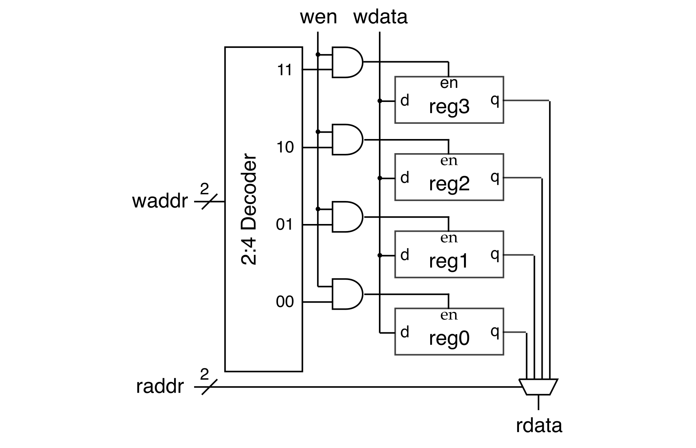

Section 7: Verilog Memory Arrays
In this discussion section, you will use what you have learned in the
previous discussion sections to implement a simple register file memory
array at the register-transfer level (RTL). We will also learn about
implementing parameterized Verilog hardware modules. You will start by
implementing a parameterized 4-to-1 mux, parameterized decoder, and
parameterized register which are each parameterized by the input/output
bitwidth. You will then implement a 4-word 4-bit register file memory
array in two ways: (1) structurally by composing the mux, register, and
decoder; and (2) flat using a single always_ff and always_comb block.
In the past discussion sections, we have focused on how to use Verilog to model combinational logic at both the gate-level and RTL. In this discussion section, we will only be using RTL. Remember from previous discussion sections that it is critical that students always know what is the hardware they are modeling; students should understand what their RTL would likely turn into at the gate-level.
1. Logging Into ecelinux with VS Code
Follow the same process as previous discussion sections. Find a free workstation and log into the workstation using your NetID and standard NetID password. Then complete the following steps (described in more detail in the last discussion section):
- Start VS Code
- Install the Remote-SSH, Verilog, and Surfer extensions
- Use View > Command Palette to execute Remote-SSH: Connect Current Window to Host...
- Enter
netid@ecelinux.ece.cornell.edu - Install the Verilog and Surfer extensions on the server
- Use View > Explorer to open your home directory on
ecelinux - Use View > Terminal to open a terminal on
ecelinux
There is no need to fork the repo for today's discussion section. Simple clone the repo as follows.
% source setup-ece2300.sh
% mkdir -p ${HOME}/ece2300
% cd ${HOME}/ece2300
% git clone git@github.com:cornell-ece2300/ece2300-sec07-verilog-mem sec07
% cd sec07
% tree
The repo includes the following files:
Makefile.in: Makefile for the build systemconfigure: Configure script for the build systemconfigure.ac: Used to generate the configure scriptscripts: Scripts used by the build systemMux4_RTL.v: Parameterized 4-to-1 mux in RTLDecoder_RTL.v: Parameterized binary decoder in RTLRegister_RTL.v: Parameterized register with reset and enable in RTLRegfileStruct1r1w_4x4b_RTL.v: Regster file using structural RTLRegfileFlat1r1w_4x4b_RTL.v: Regster file using flat RTLtest: Directory with unit tests for each hardware module
Go ahead and create a build directory and run configure to generate a Makefile.
To make it easier to cut-and-paste commands from this handout onto the
command line, you can tell Bash to ignore the % character using the
following command:
Now you can cut-and-paste a sequence of commands from this tutorial
document and Bash will not get confused by the % character which begins
each line.
2. Implementing and Testing a Parameterized 4-to-1 RTL Multiplexor
Our goal is to now implement a parameterized 4-to-1 multiplexor using RTL modeling. Parameterized hardware modules have an additional list of parameters as part of their interface. These parameters can be used to specify the bitwidths of ports and declare internal wires. Here is a trivial parameterized pass through module that simply connects the input port to the output port. The pass through module is parameterized by the bitwidths of the input and output ports.
module PassThrough
#(
parameter p_nbits = 1
)(
input logic [p_nbits-1:0] in,
output logic [p_nbits-1:0] out
);
assign out = in;
endmodule
Paarameters are specified as an additional list enclosed in #() before
the list of ports. By convention, we prefix all parameters with p_.
Parameters can have default values (the default value for p_nbits above
is 1). We need new syntax to insantate a module with parameters. The
following instantiates two pass through modules with a large module.
module DoublePassThrough_8b
(
input logic [7:0] in,
output logic [7:0] out
);
logic [7:0] pt0_out;
PassThrough
#(
.p_nbits(8)
)
pt0
(
.in (in),
.out (pt0_out)
);
PassThrough
#(
.p_nbits(8)
)
pt1
(
.in (pt0_out),
.out (out)
);
endmodule
To specify parameter values when instantiating a hardware module we use
an extra #() before connecting the ports. Our coding conventions
require always using named port lists, and usually we always want to use
named parameter lists as well so there is no confusion what parmeters we
are setting. However, as special exception to our coding conventions, if
a module is only parameterized by the bitwidth then you can just use
a positional parameter specification like this.
module DoublePassThrough_8b
(
input logic [7:0] in,
output logic [7:0] out
);
logic [7:0] pt0_out;
PassThrough#(8) pt0
(
.in (in),
.out (pt0_out)
);
PassThrough#(8) pt1
(
.in (pt0_out),
.out (out)
);
endmodule
2.1. Implementing a Parameterized 4-to-1 Multiplexor
We have provided you the interface for a parameterized 4-to-1 mux
in Mux4_RTL.v.
module Mux4_RTL
#(
parameter p_nbits = 1
)(
input logic [p_nbits-1:0] in0,
input logic [p_nbits-1:0] in1,
input logic [p_nbits-1:0] in2,
input logic [p_nbits-1:0] in3,
input logic [1:0] sel,
output logic [p_nbits-1:0] out
);
Activity 1: Implement a Parameterized 4-to-1 Mux
Use what you have learned to create a Verilog hardware design that
implements a parameterized 2-to-1 mux. You should have a single
always_comb block. Although it is possible to use if/else
conditional operators, try using a case statemet instead.
2.2. Testing a Parameterized 4-to-1 Multiplexor
Testing parameterized hardware modules is more challenging since we need
to instantiate the design under test with many different parameters and
then throughly test each instance. We have provided you a test bench in
Mux4_RTL-test.v. Notice how we have a separate parameterized test
module; the test cases in the test module are all parameterized so we can
use the same test cases to test modules with different parameter values.
You can run the test simulator for the mux as follows. Currently we are only testing a 1-bit 4-to-1 mux.
Activity 2: Test Parameterized 4-to-1 Mux
Instantiate TestMux4 two more times to test a 5-bit 4-to-1 mux and
a 32-bit 4-to-1 test. Use run_test_suite in the top-level initial
block to run these two new test suites. Build and run the updated
test simulator to verify the parameterized mux works for a variety of
different parameters.
3. Implementing and Testing a Parameterized RTL Decoder
We will now implement a parameterized binary decoder using RTL modeling. Recall that a decoder takes as input a binary number and produces a one-hot encoding of that binary number. If the input is 0, then bit 0 should be 1 and the remaining bits should be 0. If the input is 1, then bit 1 should be 1 and the remaining bits should be 0.
We will need to start understanding the static elaboration phase of hardware modeling. Static elaboration involves generating hardware, and is a form of meta-programming (i.e., programs that generate programs). Static elaboration is not about modeling hardware; it is about generating hardware. Static elaboration happens once when we construct the hardware (or construct a simulator); static elaboration is very seperate from runtime when the hardware is actually executing. Let's look at the interface for the parameterized mux.
module Decoder_RTL
#(
parameter p_nbits = 4
)(
input logic [$clog2(p_nbits)-1:0] in,
output logic [p_nbits-1:0] out
);
$clog2() is a new Verilog construct that returns the ceiling log base 2
of its input. This enables us to specify a 2-to-4 decoder: we specify
p_nbits as 4 and the input port will be automatically determined to
hvae a bitwidth of 2 at static elaboration time. $clog2() has nothing
to do with modeling hardware. It is only used for generating
hardware. Here it is used to determine a bitwidth based on a parameter
value.
3.1. Implementing a Parameterized Decoder
We have provided you the interface for a parameterized decoder in
Decoder_RTL.v.
Activity 3: Implement a Parameterized Decoder
Use what you have learned to create a Verilog hardware design that
implements a parameterized decoder. You should have a single
always_comb block. Then run the tests in Decoder_RTL-test.v.
4. Implementing and Testing a Parameterized RTL Register
We will now implement a parameterized register using RTL modeling.
4.1. Implementing a Parameterized Register
We have provided you the interface for a parameterized register in
Register_RTL.v.
module Register_RTL
#(
parameter p_width = 1
)(
input logic clk,
input logic rst,
input logic en,
input logic [p_width-1:0] d,
output logic [p_width-1:0] q
);
Activity 4: Implement a Parameterized Register
Use what you have learned to create a Verilog hardware design that
implements a parameterized register. You should have a single
always_ff block with an if/else conditional operation to handle the
reset and enable signals. Then run the tests in
Register_RTL-test.v.
5. Implementing and Testing a Structural Register File
A memory array is a two-dimensional array of sequential logic gates (also called "bit cells"). A register file is a specific kind of memory array where D flip-flops are used as the sequental logic gates. We can implement a register file structurally using the mux, decodier, and register developed earlier in this discussion section.

This register file has four "words" and each word is 4-bits. The register file has one write port and one read port (i.e., we can do a 4-bit write and a 4-bit read at the same time). The read port is combinational; if we set the read address then the read data comes back that same cycle (i.e., combinationally).
We have provided you the following Verilog structural template for this
register file in RegfileStruct1r1w_4x4b_RTL.v:
module RegfileStruct1r1w_4x4b_RTL
(
input logic clk,
input logic rst,
input logic wen,
input logic [1:0] waddr,
input logic [3:0] wdata,
input logic [1:0] raddr,
output logic [3:0] rdata
);
// Write Address Decoder
logic [3:0] regfile_en;
Decoder_RTL#(4) waddr_decoder
(
.in (waddr),
.out (regfile_en)
);
// Register file array
logic [3:0] regfile_q [4];
genvar i;
generate
for ( i = 0; i < 4; i = i + 1 ) begin : regfile
//''' ACTIVITY ''''''''''''''''''''''''''''''''''''''''''''''''''''''
// Instantate a 4-bit register and connect appropriately
//>''''''''''''''''''''''''''''''''''''''''''''''''''''''''''''''''''
end
endgenerate
// Read mux
Mux4_RTL#(4) mux
(
.in0 (regfile_q[0]),
.in1 (regfile_q[1]),
.in2 (regfile_q[2]),
.in3 (regfile_q[3]),
.sel (raddr),
.out (rdata)
);
endmodule
This template is again making use of static elaboration. The generate loop is a new Verilog construct which can be used to programmatically instantiate hardware modules at static elaboration time. Generate loops do not happen at runtime when the hardware is actually executing. The generate loop in this template is used to instantiate four registers. These kind of generate statemts can greatly simplify complex hardware (especially complex parameterized hardware).
The following construct from the template creates an array of signals:
This creates an array of four signals, each signal is four-bits.
Activity 5: Implement and Test Structural Register File
Instantiate your 4-bit register using your parameterized register in
the template. Verify your register file works using the provided test
bench in RegfileStruct1r1w_4x4b_RTL-test.v.
6. Implementing and Testing a Flat Register File
We can also implement a register file flat using a single always_ff
block for the write ports and a single always_comb block for the read
port. We will use an array of signals to act as the state.
You can read and write four-bit signals from this array by simply indexing into it. So the following will write the binary value 0011 into the second signal in this array.
Activity 6: Implement and Test Flat Register File
Implement the flat register file using a single always_ff block and
a single always_comb block. Verify your register file works using
the provided test bench in RegfileFlat1r1w_4x4b_RTL-test.v.
7. Clean Build
As a final step, do a clean build to verify everything is working correctly.